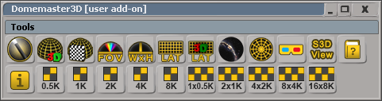
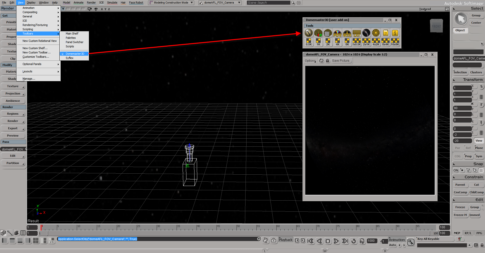
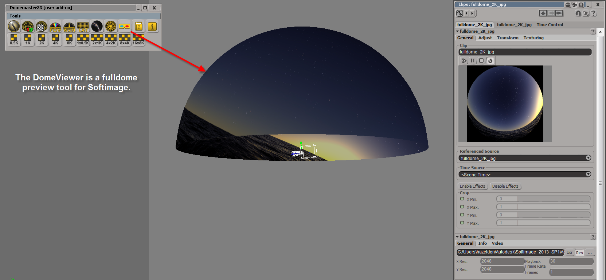
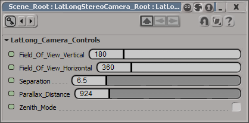
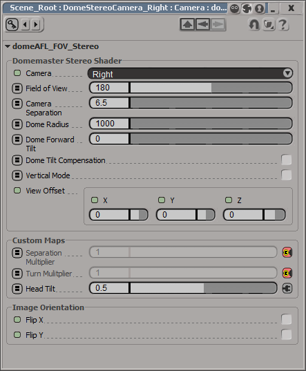

Version 1.6 Alpha 5 - October 27, 2014
Ported to Softimage by Andrew Hazelden
Email: andrewhazelden@gmail.com
Web: www.andrewhazelden.com
DomeAFL_FOV_Stereo and LatLong_Stereo shaders created by Robert Ziche
http://fulldome.ning.com/forum/topics/stereoscopic-domemaster-images
https://github.com/zicher3d-org/domemaster-stereo-shader/
DomeAFL_FOV_Stereo is Based upon Daniel Ott's 2D "DomeAFL" Angular fisheye lens shaders
http://www.thedott.net/shaders/domeAFL/
Domemaster3D Softimage Wiki
https://github.com/zicher3d-org/domemaster-stereo-shader/wiki/Softimage-Domemaster3D-Install
The Domemaster Stereo lens shader is a custom mental ray shader that creates a stereoscopic 3D fisheye image. The lens shader provides advanced controls to optimize the viewing experience for stereoscopic dome renderings.
The Domemaster3D shader for Softimage includes a new toolbar which automates the most common tasks.

The Softimage Domemaster3D toolbar has buttons for the following features:
The starglobe tool for Softimage makes it easy to add a starry night backdrop to your fulldome renderings. You can access the tool by opening the Domemaster3D toolbar.

The DomeViewer tool allows you to preview a fulldome angular fisheye image in Softimage.

The Domemaster3D v1.6 release has added a new LatLong_Stereo node that makes it easy to render spherical stereoscopic images.
You can access the controls by expanding the LatLongStereoCamera_Root object in the Explorer window, and double clicking on the LatLong_Camera_Controls object.

Open Softimage.
From the File Menu Select > Add-On > Install...
In the Install Add-On window next to the Filename "Select a File..." section click on the button labeled "..."
In the file dialogue select the file domemaster3D.xsiaddon. This is the add-on package file that contains the Domemaster3D shader .dll and .spdl files. Click the "OK" Button.
The files that are contained in the domemaster3D.xsiaddon package will be listed in the Install Add-On window. Click the "Install" button to load the Domemaster3D files. By default the files will be copied into the Softimage Addons folder:
C:\Users\<your user id>\Autodesk\Softimage_<Version Number>\Addons\domemaster3D
Quit Softimage.
When you restart Softimage you can begin using the new lens shaders. The Domemaster3D lens shaders will be listed in the Lens tab of the Render Tree.
You should now have the following new lens shaders:
domeAFL_FOV
domeAFL_FOV_Stereo
domeAFL_WxH
latlong_lens
LatLong_Stereo
rob_lookup_background
Step 1. Select Your Camera
Open the explorer window to view all of the cameras in the current scene(hotkey Ctrl-8).
Next, select a camera in the explorer window.
Press Alt-Enter to open the Scene_Root:Camera:Camera editor window
Step 2. Choose your lens shader
In the Camera Editor window click on the "Lens Shaders" tab. This view lists lens shaders currently applied to your camera.
Let's attach a new lens shader to the current camera. In the "Lens Shaders" tab click the Add button.
Pick one of the lens shaders from the pop-up menu such as domeAFL_FOV_Stereo.
Field of View: The field of view for the rendered fisheye image.
Camera: Choices are Center/Left/Right. Selects the camera to use for rendering. Center skips 90% of the calculations and gives you a highly optimized standard angular fisheye shader.
Dome Radius (focus plane): This is actually the distance at which the camera's line of sight converges. This is also known as the zero parallax distance so the control isn't really the dome size.
Dome Forward Tilt: Dome tilt in degrees. Note that this value is not used unless you enable Dome Tilt Compensation.
Camera Separation: The initial separation of the left and right cameras.
Separation Multiplier: A value between 0-1 that multiples the Camera Separation. This attribute is meant to be used with a grayscale texture mapped to the screen space using the right button. It's used to control the amount of 3D effect, and eliminate it where desired.
Turn Multiplier: A value 0-1 that controls the amount of the head turn. To be used with a grayscale texture. Typical use, keep the head straight while looking at the top of the dome.
Head Tilt: A value 0-1 (with 0.5 being the "neutral" value) that tilts the cameras (or head) left/right. 0 means 90 degrees to the left, 1 means 90 degrees to the right (if I remember correctly).
Dome Tilt Compensation: Enabling this option, shifts all the calculations by the # of degrees specified in Dome Forward Tilt. (Basically, it keeps the fulldome cameras / viewer's head vertical while the dome rotates forward.)
Maps used for the various multipliers and tilt settings will have to be custom made for the proper dome tilt.
Vertical Mode: Enables the vertical dome mode which automatically adjusts the head turn setting and adds a turn compensation for the upper and lower part of the dome. It's a simplified and optimized version of the Dome Tilt Compensation with a 90 degree tilt angle. It is faster and easier to use.

Set the mib_texture_vector "selspace" aka. select space value to 4 (screen space) to enable the camera UV space projection. This means the texture will be loaded using a projection to the UV space coordinates of the camera.
mib_texture_vector.out -> mib_texture_remap.input
mib_texture_remap.out -> mib_texture_filter_lookup.coord
separation_map_png.tex -> mib_texture_filter_lookup.tex
mib_texture_filter_lookup.out -> Color_to_Scalar.input -> rob_lookup_background.tex
rob_lookup_background.out -> Camera Lens Shader.item
Start by placing your texture maps for controlling the camera separation and turn maps in the "Pictures" folder for your current Softimage project.
Select your current camera and open the Render tree. (Shift-7)
In the Render Tree toolbar click the update icon (circular arrows) to load the current nodes in the Render Tree view. Display the preset manager view.
Step 1. Connect the Domemaster 3D Shader
Scroll down in the Render tree sidebar to the SPDL Shaders -> lens section. Add a domeAFL_FOV_stereo shader to the work area.
Connect domeAFL_FOV_Stereo.out to the Camera lens Shaders.item
Step 2. Let's create the supporting nodes for the custom separation map
The rob_lookup_background shader lets you preview your camera coordinate space Separation and Head Turn Map textures before you map them to the domemaster shader DomeAFL_FOV_Stereo.
Scroll up to the Processing -> Conversion section in the render tree.
Add a "Color to Scalar" node to the work area. This node will convert the texture from an RGB image into a greyscale "tex" image.
Connect Color_To_Scalar.out to rob_lookup_background.tex
Scroll down in the Render tree sidebar to the mental ray -> texture section. Add a mib_texture_filter_lookup node to the work area. This node merges the image data with our custom camera space UV coordinates.
Connect mib_texture_filter_lookup.out to Color_to_Scalar.input.
Double click on the mib_texture_filter_lookup node in the render tree to open the editor. In the editor window next to the tex attribute click the New button. In the pop-up menu select "New From File...".
A "New Image Clip" dialogue will appear that lets you select a file texture from your hard drive. Select the file separation_map.png from the domemaster3D_sample_project\Pictures folder. Click the "OK" Button.
The mib_texture_filter_lookup node should now display a crescent shaped preview icon in the "tex" section.
Let's connect the custom nodes to create the camera space UV coordinates. Start by closing any floating editor windows.
We need to add two more nodes to the Render Tree. In the sidebar click on the mental ray -> textures section add a mib_texture_vector and a mib_texture_remap node.
Double click on the mib_texture_vector node. In the editor window change the mib_texture_vector node's selspace value to 4. This means the node will select the UV space for the texture from the current camera's UV coordinates. Close the floating editor window.
Connect the mib_texture_vector.out to the mib_texture_remap.input.
Connect the mib_texture_remap.out to the mib_texture_filter_lookup.coord.
Deselect all of the nodes in the render tree. From the Tools menu in the Render Tree window select Rearrange (Ctrl-R) to cleanup the work area.
To see the results of the rob_lookup_background shader you need to click the 'preview' or 'render' buttons.